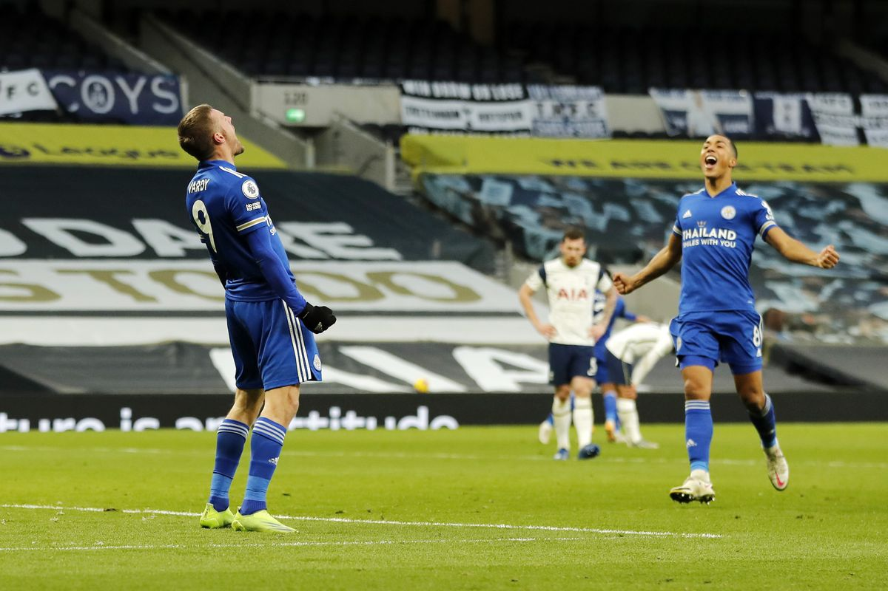

-
Leicester Take Down Tottenham In Top-Four Clash
by Mitchel Green - December 20, 2020
|
mitchgr@umich.edu

Final Score: Tottenham 0-2 Leicester
In this top-four Premier League clash, Tottenham were looking to bounce back from a disappointing defeat to leaders Liverpool earlier in the week. Leicester, meanwhile, were looking to solidify a Champions League place with a win over a rival for that spot. Here are five key takeaways:
1. Leicester Gameplan And Adjustments Outwit Spurs
Tottenham were able to keep themselves in the game early with their defense. Leicester were getting shots off, but no high percentage looks. But, while they were not posing a huge threat offensively, the Foxes were controlling the game well. Spurs were never able to create anything on the counterattack because they almost never got the ball. And even when they did, Leicester’s press won the ball back almost immediately. It looked like a stalemate until a clumsy challenge by Serge Aurier gave Leicester a penalty right before halftime - which Jamie Vardy easily put away. Now with a lead, Leicester was able to flip the script tactically by playing Spurs’ game against them. Tottenham failed to create much outside of a close-in shot from Son in the 70th minute, and Leicester were comfortable sitting back and playing long balls into the channels. Not only did it nullify any threat from Tottenham, but it even created an own goal - a Vardy header that ricocheted off Alderwiereld - and an excellent goal from Maddison that was disallowed for barely being offside. Leicester have a crucial game against Manchester United on Boxing Day, but if they can win that they are in a prime position to challenge Liverpool for the title.
2. Maddison Reminds Us Why He Remains The Focal Point
Although he is not performing as well as the previous two seasons, James Maddison reminded us with his performance against Spurs why he still should be the focal point of the Leicester offense. He puts in good work off the ball, does well to progress from deeper, and is the best creative threat they have. Against Tottenham, Maddison registered five key passes with an expected assist rate of 0.4 as well as four shots with an expected goal rate of 0.11 (less effective but he’s never been a particularly efficient shooter). His usage rate remains high at 25.11% - up from 22.46% last season - and his actual goal production per 90 numbers are up as well, with 1.15 per 90 up from 0.65 last season (though his expected metrics are down). Time will tell if he can keep those numbers up over the course of the entire season, but if Leicester are to mount a title charge, Maddison will need to continue producing at a similar rate. And unless he can somehow become more efficient, Leicester need to maintain his high usage rate.
3. Tottenham’s Title Challenge Is Over
Sorry Spurs fans, your title challenge is pretty much over. One point from three games may not seem bad, especially in a season where everyone seems to be dropping more points than usual. But this is not just a blip in form for Tottenham, these are the levels they have been playing at all season. Spurs overperformed massively in the opening weeks of the season on the backs of unsustainable levels of finishing from Son Heung-Min and Harry Kane. The fact that 80% of their goals were coming from two players was also a sign that results would eventually drop as at least one of them was bound to go through a bad run of form at some point. I had been anticipating a drop in form for weeks, and now regression seems to finally have caught up with Jose Mourinho’s side. While the drop off is annoying for the team and supporters, it should not be disappointing. This is a team that is still in a post-Pochettino transition period, and they will still need some more pieces if they want to get back to a position where they can challenge for the league. A Champions League spot is still up for grabs, and that needs to be the goal for the rest of the season.
4. Spurs Lack Of Midfield Depth Hurts When They Play On The Attack
With the departure of Tanguy Ndombele at halftime and Gio Lo Celso with an injury shortly after, Tottenham’s midfield lacked the qualities needed to break down Leicester’s second-half low block. Perhaps if they had more similar players on the bench, they could have survived the substitutions, but Gareth Bale and Lucas Moura were completely ineffective once introduced to the game. Combined, they produced one shot and one key pass (both by Bale) for a total xG of 0.11. Their passing and shooting were complete non-factors, and without Ndombele or Lo Celso, Spurs lacked the deep progressor/creator necessary to beat a team sitting deep. A bench player (or two) in that mold will be a need for this team going into the next two transfer windows. Until they bring them in, Tottenham will struggle against low block teams without Ndombele and Lo Celso on the field.
5. Let’s Give Brendan Rodgers More Credit
I just want to give a shout-out to Brendan Rodgers for doing a great job with Leicester City. I feel like I never see him getting a lot of praise (although maybe it’s just not in what I’m reading) but he is one of the best managers in the Premier League. By the end of this season, he should have a second straight top 5 finish with Leicester. This is, of course, despite having less talent and money than the traditional top six and dealing with a serious amount of injuries in the back half of last season and beginning of this season. On top of his achievements, he is just a fantastic game manager, as his tactical setup and adjustments against Tottenham showed. As long as he sticks around, I think Leicester can become a regular top-four challenger (And maybe even title contender?).